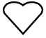

<!-- Consider the below html that shows a span containing 3 hearts:

<span id="hearts">
    
    
    
</span>
Write JavaScript code that finds the span element first, then finds the third heart shape using childNodes,with its corresponding index and sets the element's src property so that the new image src points to“javascript.jpg”. -->

<!DOCTYPE html>
<html lang="en">
  <head>
    <meta charset="UTF-8" />
    <meta name="viewport" content="width=device-width, initial-scale=1.0" />
    <title>Document</title>

    <span id="hearts">
      
      
      
    </span>

    <script>
      // Find the span element by its id
      var heartsSpan = document.getElementById("hearts");

      // Find the third heart using childNodes
      var thirdHeart = heartsSpan.childNodes[5]; // Index starts at 0, so the third element is at index 5; because there spaces between image

      // Set the src property of the third heart to "javascript.jpg"
      thirdHeart.src = "javascript.jpg";
    </script>
  
</head>
  <body></body>
</html>
